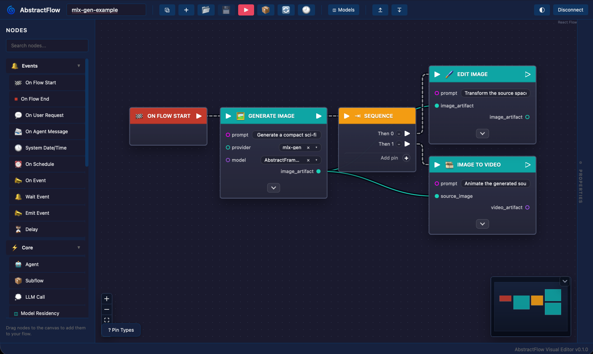
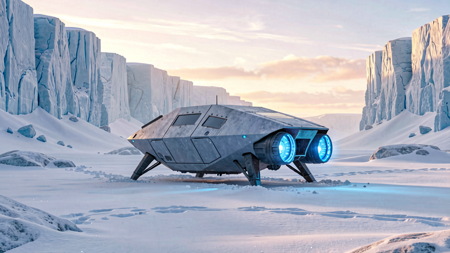
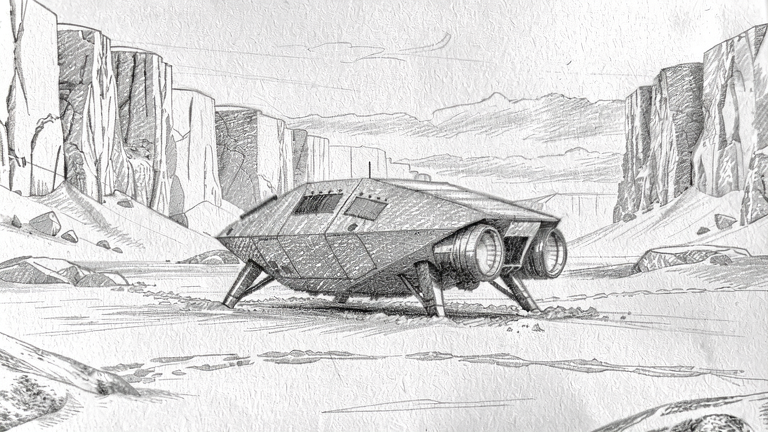
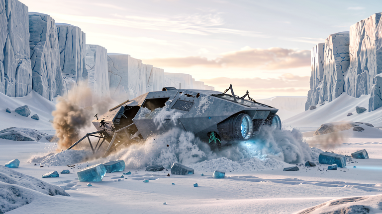
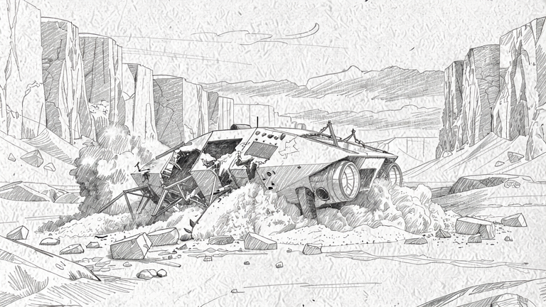
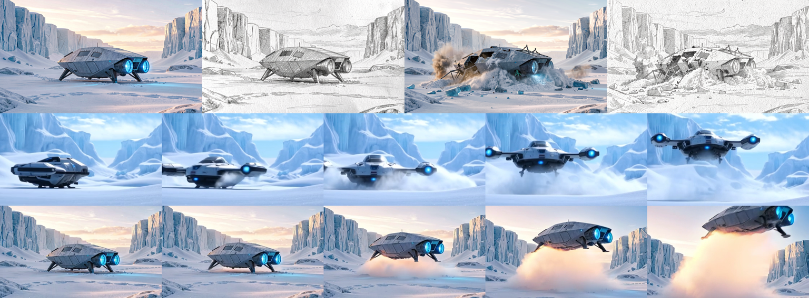

Spaceship Snow Workflow¶
This guide reproduces a compact end-to-end MLX-Gen workflow across text-to-image, image-to-image, multi-reference image-to-image, text-to-video, and image-to-video.
The included assets were generated locally with MLX-Gen on Apple Silicon. The commands below write
outputs into outputs/spaceship-snow/; adjust paths as needed.

The screenshot above is from AbstractFlow, a visual workflow authoring tool in the AbstractFramework ecosystem. AbstractFlow can compose generative image/video capabilities exposed through AbstractVision and AbstractCore; the sections below provide the equivalent direct MLX-Gen CLI commands.
Models¶
Download the MLX-Gen optimized model packages first:
mlxgen download --model AbstractFramework/flux.2-klein-9b-8bit
mlxgen download --model AbstractFramework/wan2.2-t2v-a14b-diffusers-8bit
mlxgen download --model AbstractFramework/wan2.2-i2v-a14b-diffusers-8bit
Create the output folder:
mkdir -p outputs/spaceship-snow
The image examples use FLUX.2 Klein 9B 8-bit. The video examples use the mixed q8/BF16 Wan2.2
A14B T2V and I2V packages. The included video assets use 448x256, 41 frames, 20 steps, and 10
fps. Wan A14B accepts width and height multiples of 16, so smaller sizes such as 432x240 are also
valid if you want a lower-cost local check.
For longer five-second Wan comparison clips at 101 frames and 20 fps, see
Wan Video. That page includes the same starship-takeoff prompt rendered with
Wan2.2 A14B at 480x240 and TI2V-5B at 832x480 and 1280x704.
1. Text To Image¶
Generate the source spaceship in snow:
mlxgen generate \
--model AbstractFramework/flux.2-klein-9b-8bit \
--prompt "A cinematic wide shot of a compact sci-fi spaceship with landing struts and glowing blue engines resting in deep snow on a frozen alien planet, angular hull panels, no wings like an airplane, blue-white ice cliffs in the distance, soft sunrise light, crisp realistic detail, clean frame without any text or logos" \
--width 768 \
--height 432 \
--steps 24 \
--guidance 1.0 \
--seed 6107 \
--output outputs/spaceship-snow/01_t2i_spaceship_snow.png
Included output:

2. Image Edit: Pencil Sketch¶
Pass the generated image as --image. With FLUX.2 Klein, one image and no --image-strength
routes to the edit/reference image-to-image mode:
mlxgen generate \
--model AbstractFramework/flux.2-klein-9b-8bit \
--image outputs/spaceship-snow/01_t2i_spaceship_snow.png \
--prompt "Transform the input image into a detailed graphite pencil sketch on white paper. Preserve the same spaceship shape, landing struts, snow field, and ice cliffs. Use monochrome pencil lines, soft shading, and hand-drawn texture. No color, no text, no watermark." \
--width 768 \
--height 432 \
--steps 24 \
--guidance 1.0 \
--seed 6201 \
--output outputs/spaceship-snow/02_i2i_pencil_sketch.png
Included output:

3. Image Edit: Crash In Snow¶
Use the same source image and ask for a different edit:
mlxgen generate \
--model AbstractFramework/flux.2-klein-9b-8bit \
--image outputs/spaceship-snow/01_t2i_spaceship_snow.png \
--prompt "Edit the input image so the same spaceship has crash-landed in the snow. Show the hull tilted and partly buried, broken landing struts, damaged panels, churned snow, a small plume of smoke, and scattered ice debris. Keep the frozen alien planet, ice cliffs, cinematic realistic style, no people, no text." \
--width 768 \
--height 432 \
--steps 24 \
--guidance 1.0 \
--seed 6301 \
--output outputs/spaceship-snow/03_i2i_crash_snow.png
Included output:

4. Multi-Reference Image-To-Image¶
Repeat --image to provide multiple references. In this example, the first image supplies the
pencil style and the second image supplies the crash layout:
mlxgen generate \
--model AbstractFramework/flux.2-klein-9b-8bit \
--image outputs/spaceship-snow/02_i2i_pencil_sketch.png \
--image outputs/spaceship-snow/03_i2i_crash_snow.png \
--prompt "Create one coherent composition using both reference images: use the crash-landed spaceship layout, damage, smoke, snow, and ice debris from the crash reference, but render the entire scene in the graphite pencil sketch style from the sketch reference. Monochrome pencil drawing, visible paper texture, same wide icy landscape, no color, no text." \
--width 768 \
--height 432 \
--steps 24 \
--guidance 1.0 \
--seed 6401 \
--output outputs/spaceship-snow/04_i2i_multi_reference_sketch_crash.png
Included output:

5. Text To Video With Wan A14B¶
Generate a short takeoff video from text only:
mlxgen generate \
--model AbstractFramework/wan2.2-t2v-a14b-diffusers-8bit \
--prompt "A cinematic video of a compact sci-fi spaceship on a frozen snow planet. The ship powers up, blue engines glow, loose snow blows outward, then the spaceship slowly lifts off vertically from the icy ground. Stable wide camera, clear snow cliffs, no people, no text." \
--width 448 \
--height 256 \
--frames 41 \
--steps 20 \
--guidance 4 \
--guidance-2 3 \
--fps 10 \
--seed 6501 \
--output outputs/spaceship-snow/05_t2v_a14b_spaceship_takeoff_snow_planet.mp4
Included frame strip:
Included video:
6. Image To Video With Wan A14B¶
Use the generated spaceship image as the first-frame condition:
mlxgen generate \
--model AbstractFramework/wan2.2-i2v-a14b-diffusers-8bit \
--image outputs/spaceship-snow/01_t2i_spaceship_snow.png \
--prompt "Starting from the input image, animate the same compact sci-fi spaceship on the frozen snow planet. The blue engines brighten, snow blows outward under the hull, and the spaceship slowly lifts off vertically while keeping its shape and the icy cliffs stable. Cinematic wide camera, no people, no text." \
--width 448 \
--height 256 \
--frames 41 \
--steps 20 \
--guidance 4 \
--guidance-2 3 \
--fps 10 \
--seed 6601 \
--output outputs/spaceship-snow/06_i2v_a14b_spaceship_takeoff_from_source.mp4
Included frame strip:
Included video:
Result Summary¶
The contact sheet combines the generated images and sampled video frames:

| Output | Public task | Internal mode | Model |
|---|---|---|---|
01_t2i_spaceship_snow.png |
text-to-image |
text-only |
AbstractFramework/flux.2-klein-9b-8bit |
02_i2i_pencil_sketch.png |
image-to-image |
edit-reference |
AbstractFramework/flux.2-klein-9b-8bit |
03_i2i_crash_snow.png |
image-to-image |
edit-reference |
AbstractFramework/flux.2-klein-9b-8bit |
04_i2i_multi_reference_sketch_crash.png |
image-to-image |
multi-reference |
AbstractFramework/flux.2-klein-9b-8bit |
05_t2v_a14b_spaceship_takeoff_snow_planet.mp4 |
text-to-video |
text-video |
AbstractFramework/wan2.2-t2v-a14b-diffusers-8bit |
06_i2v_a14b_spaceship_takeoff_from_source.mp4 |
image-to-video |
first-frame-i2v |
AbstractFramework/wan2.2-i2v-a14b-diffusers-8bit |
Both included videos are 448x256, 41 frames, 10 fps, and 4.1 seconds.
Related Docs¶
- API and CLI explains the router and internal image-to-image modes.
- Model management explains how to download or prepare models before running generation.
- Quantization describes the mixed q8/BF16 Wan A14B packages.
- FAQ includes Wan prompting and image-to-video quality guidance.